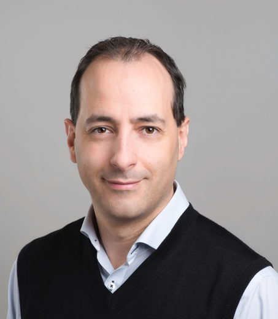

|
Social Media:
|
|
Keynote Speeches
Speaker: Professor Antonio Liscidini, University of Toronto, Canada

Title: Quantized-Analog Signal Processing
Abstract:
Nowadays, both digital and analog electronics are reaching fundamental limits that will require revolutionary approaches to satisfy the power/bandwidth requirements of the next generation of data-driven applications.
In the first part of the talk, analog and digital signal processing will be compared in terms of power efficiency by highlighting the presence of a thermodynamic upper-bound which relates dynamic range, bandwidth and power dissipation. To circumvent this limit, in the second part of the talk, the quantized-analog signal processing will be introduced. In such approach, analog and digital domains are merged together in a more fluid scenario compared to traditional mixed-signal circuits avoiding the needs of rigid interfaces such as analog-to-digital and digital-to-analog converters.
It will be shown that the quantized-analog signal processing leads to superior power efficiency and flexibility compared to its analog counterpart and it represents a good candidate for the development of a new generation of mixed signal integrated circuits. The effectiveness of the proposed solutions will be demonstrated through simulations and measurement results.
Biography:
Antonio Liscidini received the Laurea (summa cum laude) and Ph.D. degrees in electrical engineering from the University of Pavia, Pavia, Italy, in 2002 and 2006, respectively.
He was a summer Intern with National Semiconductors, Santa Clara, CA, USA, in 2003, studying poly phase filters and CMOS low-noise amplifiers. From 2008 to 2012, he was an Assistant Professor with the University of Pavia and a consultant with Marvell Semiconductors, Pavia, in the area of integrated circuit. In 2012, he moved to the Edward S. Rogers Sr. Department of Electrical and Computer Engineering, University of Toronto, Toronto, ON, Canada, where he is currently an Associate professor. In 2019 he has become consultant for Huawei Technology Group in the area of RFIC for optical communication. His research interests are focused on analog mixed signal interfaces with particular emphasis on the implementations of transceivers and frequency synthesizers for wireless and wireline communication.
Dr. Liscidini was a recipient of the Best Student Paper Award at the IEEE 2005 Symposium on VLSI Circuits and co-recipient of the Best Invited Paper Award at the 2011 IEEE CICC and the Best Student Paper Award at the 2018 IEEE ESSCIRC. He has served as an Associate Editor for the Open-Journal of Solid State Circuits Society, the IEEE Transactions on Circuits and Systems II: Express Briefs (2008-2011) (2017- 2018) and as a Guest Editor for the IEEE Journal of Solid-State Circuits (2013) (2016) and Guest Editor of the IEEE RFIC Virtual Journal (2018). He has been member of the ISSCC TPC (2012- 2017), of the ESSCIRC TPC (2010-2018), and of the CICC TPC (2019-currently). Between 2016 and 2018, he has been a Distinguished Lecturer of the IEEE Solid-State Circuits Society.